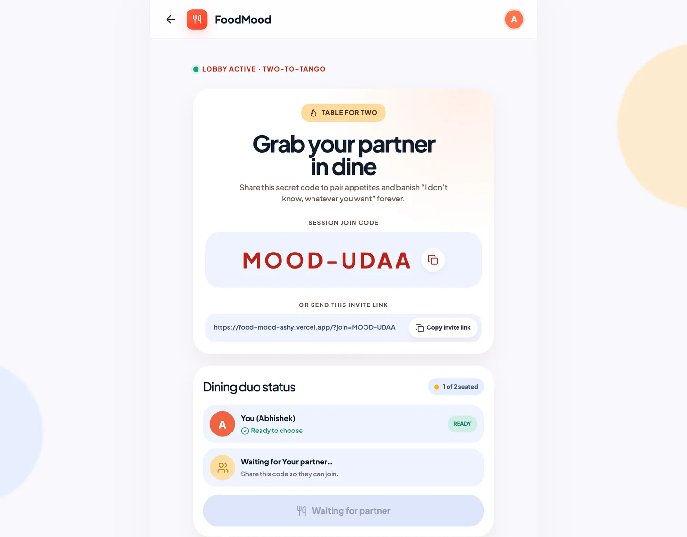
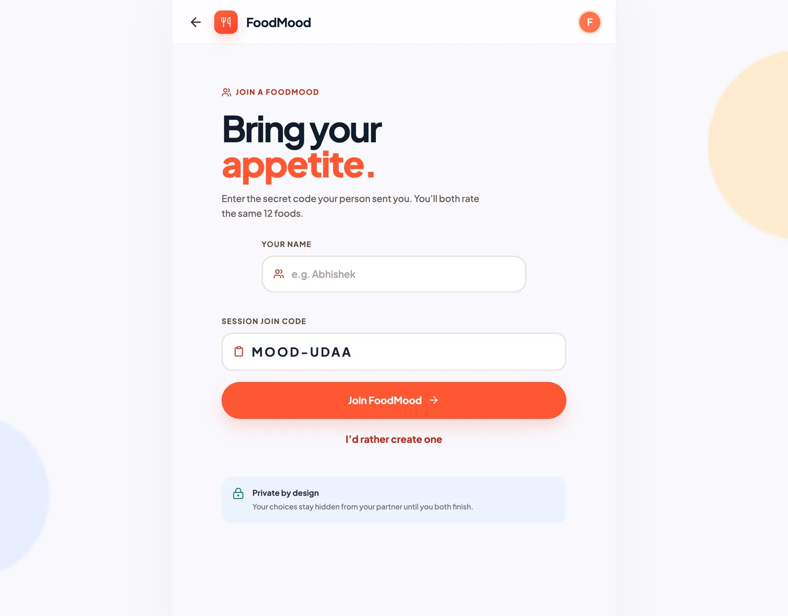
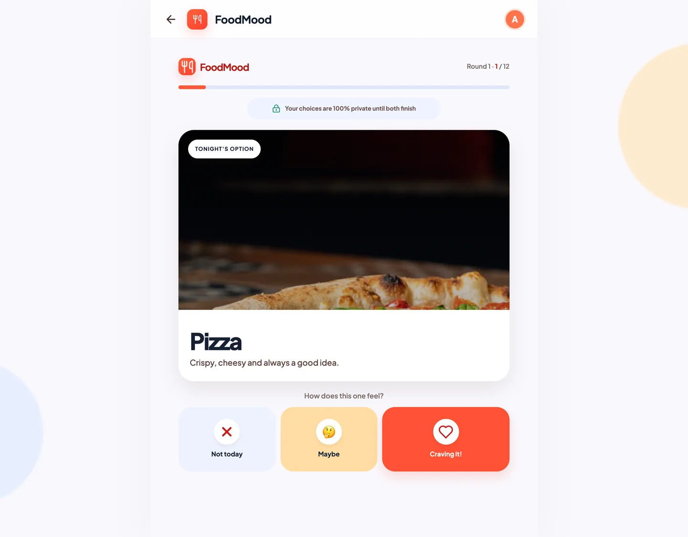
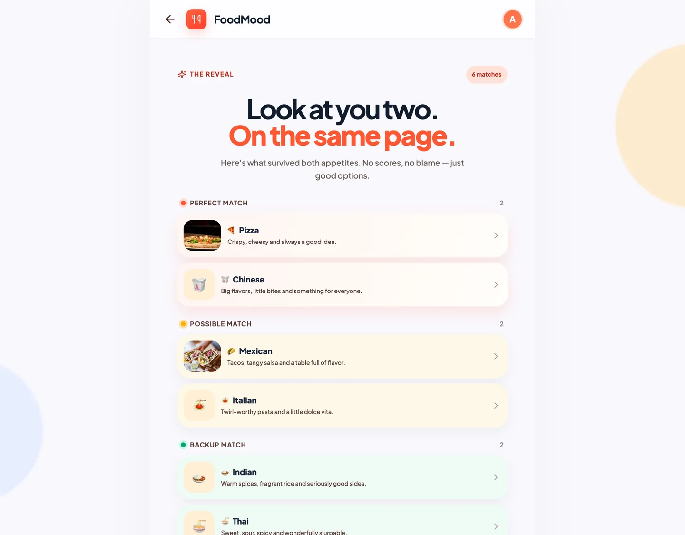
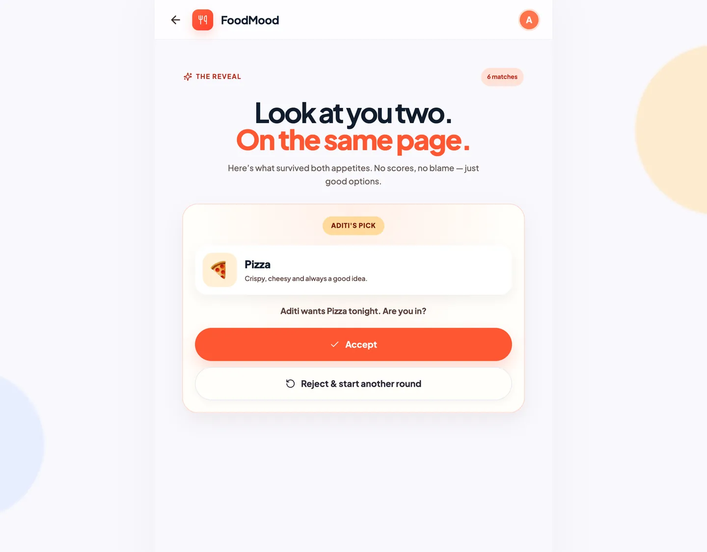
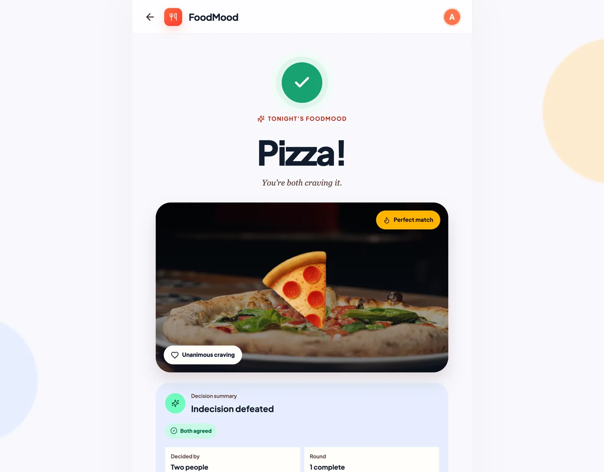

FoodMood
A real-time, two-person food decision product. Two people join one private session, privately react to the same 12 food options without seeing each other, and see only their mutual matches — then propose, accept or reject to agree on tonight's FoodMood. Designed, built, tested and deployed end-to-end as an independent portfolio product.
- Product type
- Two-person social decision product
- Primary users
- Exactly two participants per session
- Status
- V1 MVP · live · deployed on Vercel
- Principles
- Private · Mutual · Confirmed · No forcing
-
Problem
Two people cannot agree on what to eat, because the conversation collects no honest, comparable signal — and exposes every preference the moment it is stated.
-
Users
Exactly two participants per private session, deciding together across repeated rounds.
-
Goal
Collapse a negotiation into a shortlist both people can accept, without anyone conceding publicly.
-
MVP
12 shared options, private reactions, match reveal, propose → accept or reject, then another round.
-
Decisions
Matches derived from reactions and never stored; only the overlap is revealed, so nobody defends a taste.
-
Outcome
Deployed V1 on Vercel, synchronized across two browsers, and functionally tested end to end.
Product Overview
FoodMood is a real-time, two-person decision product for the most common household and social decision there is: what should we eat tonight?
The premise is simple. Two people join the same private session. Each one privately reacts to the same 12 food options — no swiping, no typing, no seeing the other person's answers. When both have finished, FoodMood shows only what the two of them have in common, ranked as Perfect, Possible or Backup matches. Either person proposes one of those matches; only the other person can accept or reject it. Accept finalizes tonight's FoodMood. Reject starts another round inside the same session.
It is a working, deployed V1 MVP, not a concept. It is live, it synchronizes across two browsers, and it was functionally tested with real two-participant sessions.
FoodMood is an independent portfolio product. It is not a Deloitte, client or employer project, and it is not associated with any company or client. I owned it end-to-end — problem, product decisions, MVP scope, validation and deployment — as portfolio evidence of how I take an ambiguous idea to a working deployed product.
The Problem
Choosing what to eat together is small in stakes and expensive in friction. The exchange usually starts with "What do you want?" — the single least productive question in a two-person decision.
What follows is predictable:
- Vague answers. "Anything", "I don't mind", "surprise me" — no information for anyone to act on.
- Rejected suggestions. The first person suggests something specific; the second rejects it, and the suggestion carries social cost with it.
- Endless back-and-forth. Ideas are traded one at a time, and each exchange spends attention instead of settling the decision.
- Decision fatigue. Instead of eating, two people spend twenty minutes negotiating a dinner they will both forget by tomorrow.
- Social pressure on preferences. People rarely say "I really want sushi" when they can see the other person already said no.
Two people cannot agree on what to eat because the conversation collects no honest, comparable signal — and it exposes every preference the moment it is stated.
The underlying issue is not a lack of options. It is that preference is expressed socially rather than privately. People are honest about what they do not want far more often than they are honest about what they do want.
Product Hypothesis / Solution
Product hypothesisIf two people rate the same food options privately, and the product shows only their overlap — never their disagreement — then the decision collapses from a negotiation into a shortlist that both people can accept, without anyone having to concede publicly.
FoodMood turns an open-ended conversation into a structured, asynchronous-feeling matching session. Each person does the same small amount of work in private. The product does the comparison. The only thing left for the two people to do is agree.
Three structural choices carry the whole hypothesis:
- Private capture. Preferences are collected where neither person can see the other's, so the answer reflects what they actually feel.
- Overlap only. The reveal shows shared ground, not who rejected what — so nobody has to defend a taste.
- Explicit confirmation. A shared match is not the decision. One person proposes, the other confirms.
The success condition is deliberately behavioural, not vanity: two people reach an agreed answer without a long back-and-forth, and neither person feels overruled.
How FoodMood Works
The session flow, end to end:
- Create. The first person enters their name and creates a FoodMood session.
- Session generated. FoodMood creates a private session and an invite link for it.
- Invite. The creator shares the invite link with one partner.
- Join, prefilled. The invite URL opens Join FoodMood with the session code already filled in.
- Second participant joins. The partner enters their name and joins the session.
- Lobby. Once both are present, rating can begin.
- Private rating. Both participants rate the same 12 food options. Each person's choices stay private.
- Waiting state. A finished participant waits while their partner completes their own ratings.
- Match reveal. Only once both are done does FoodMood reveal shared matches, ordered Perfect → Possible → Backup.
- Proposal. Either participant proposes one shared match and waits.
- Accept or reject. Only the other participant can accept or reject. Accept finalizes; reject starts another round.
- Final FoodMood. The agreed option is shown to both, and either can start another round.
Rounds stay inside the same two-person session. The session is the container; the round is the decision attempt.






Screens are captured from the deployed FoodMood MVP. Names shown are test participants used during two-browser validation.
Match Logic
Each participant reacts to each of the 12 options with one of three reactions:
The three reactions
Craving it
Strong positive preference. The default "yes, let's do this".
Maybe
Willing, not enthusiastic. Open to it if the other person is.
Not today
A clear, low-cost way to say no without having to explain.
Once both participants have rated every option, matches are derived from the pair of reactions:
| Partner A | Partner B | Match tier |
|---|---|---|
| Craving it | Craving it | Perfect Match |
| Craving it | Maybe | Possible Match |
| Maybe | Craving it | Possible Match |
| Maybe | Maybe | Backup Match |
| Not today | Any reaction | No Match |
| Any reaction | Not today | No Match |
Two rules govern the output of that derivation:
- Ordering. Matches are always presented Perfect → Possible → Backup, so the strongest agreement leads.
- No individual reactions. A participant never sees their partner's raw reaction for any option. Only the tier result is exposed.
Matches are calculated from reactions when they are read, not written as their own records. One source of truth means a match can never drift out of sync with the reactions it was derived from — see Product & System Design.
Zero matches is a valid outcome. When nothing matches, FoodMood says so and offers another round. It does not nominate a least-bad option and dress it up as a recommendation.
Key Product Decisions
These are the choices that define FoodMood. Each one is a deliberate trade, not an implementation detail.
Each person rates the same options without seeing, or reacting to, the other's choices.
FoodMood shows what both people can agree on, rather than exposing who rejected a particular food.
Craving it / Maybe / Not today, rather than a binary yes/no.
V1 is built for one pair, and enforces it — a third joiner is turned away.
A shared match is not automatically tonight's answer. One participant proposes; only the other accepts or rejects.
When no option matches, FoodMood offers another round instead of suggesting the closest thing.
The creator shares a direct invite URL that opens Join FoodMood with the session code prefilled.
Raw individual reactions are never exposed to the other participant — in the interface or in the data access path.
MVP Scope & Prioritization
V1 is defined by what it deliberately refuses to do. The exclusions below are scope control, not missing functionality — each one would have added surface area without making the core decision better.
Included and excluded from V1
In scope (V1)
- Session creation with a shareable session code and invite link
- Invite-link joining with the code prefilled
- Two named participants per session, enforced
- Private rating of 12 fixed food options
- Three reactions: craving, maybe, not today
- Perfect / Possible / Backup match derivation
- Match reveal gated on both participants finishing
- Proposal, accept and reject by the other participant
- Final FoodMood plus additional rounds in the same session
- Waiting states and cross-browser synchronization
- Copy session code and copy invite link
Out of scope for V1 (by design)
- Restaurant discovery
- Maps and location
- Delivery ordering
- Payments
- Restaurant reviews
- Group voting beyond two people
- Custom foods
- Dietary profiles
- Social feed
- Chat
- Saved decision history
How I prioritized
- Protect the decision, not the surroundings. Anything that didn't help two people agree on a FoodMood was deferred — including restaurant search, which is a separate product with its own requirements.
- Privacy before convenience. Private capture, gated reveal and non-revealed reactions were built before any convenience feature, because they are the hypothesis itself.
- One option set, done properly. A fixed 12-option deck keeps V1 about the matching mechanic. Food curation, user-created foods and dietary filtering all came later in the backlog.
- No identity system. Participation is anonymous and account-free. Login and profiles add friction to a two-minute decision and deliver no V1 value.
User Journey
The journey is asymmetric on purpose. There are shared states (lobby, rating, reveal, final) and strictly private ones (your own reactions). Every design question came down to: which side of that line does this element belong to?
Product & System Design
Development process
Product specification
The specification defined the user problem, the two-person constraint, the reaction system, matching rules, privacy requirements, the proposal and confirmation flow, and the explicit MVP boundaries. It was written so that each rule could later be tested as a pass/fail condition rather than a feeling.
UX / visualization
The complete journey was designed before implementation:
Home → Create Session → Invite/Join → Two-Person Lobby → Rating → Waiting → Match Reveal → Proposal → Accept/Reject → Final FoodMood → Another Round
Designing the waiting and reveal states first proved to be the most valuable part of that exercise. Those two screens carry the product's whole promise — "your choices are hidden" and "here is what you both want" — and they are the ones that are hardest to retrofit.
Data model
Five entities carry the product: the fixed deck of food options, the private two-person session, the two participants in it, each round of decision-making, and every reaction a participant gives an option in a round.
Matches are derived from reactions rather than stored as separate match records. There is no second copy of the truth to fall out of sync, and the match logic can change without a data migration. The same principle shows up as a product decision — a match is something both people earned in this round, not a stored fact.
How the two participants stay in sync
FoodMood is a two-player product, so a stale screen is a broken screen. Every meaningful action goes through a controlled backend function that checks the caller really is a participant in that session, and both participants are returned the same shared state rather than their own private view of it.
React and TypeScript on the front end, Supabase and PostgreSQL behind it, anonymous accounts, database-level access rules and a set of protected functions for every write. Hosted on Vercel, version controlled on GitHub.
Privacy & Trust
FoodMood makes a promise about other people's preferences, so the promise is enforced in the data layer, not only in the UI.
- Anonymous authentication enables account-free participation. Joining a FoodMood never requires a signup, and the product still has an authenticated identity to attach to each participant.
- Participants are associated with authenticated anonymous users. A session seat is tied to a verified identity, so actions can be attributed and validated even without a conventional account.
- Raw reaction tables are not directly exposed to clients. Individual reactions are not readable straight from the client.
- Access flows through controlled backend functions. The supported path is a set of secure RPC functions that validate membership before acting.
- Session membership is validated. A caller who is not a participant in that session is refused — including on reads.
- Individual partner reactions remain private. A participant can see shared match tiers for their own session, never the other person's reaction for a specific option.
- Shared matches unlock only after both participants finish. Deriving matches before both are done would leak an in-progress signal about the other person's preferences.
- Exactly two participants are enforced. The third joiner is refused, which also protects participants from being added to a session without their intent.
- Only the other participant can respond to a proposal. The proposer cannot accept their own proposal — confirmation has to come from the second person.
Privacy is the mechanism, not a compliance footnote. People express a real preference only when doing so costs nothing socially. If raw reactions leaked, the input signal would degrade immediately — and with it, the quality of every match the product shows.
Validation & Iteration
V1 was functionally tested using real two-browser, two-participant sessions — the only honest way to test a product whose entire value is what two separate people see at the same time.
Validated flows:
Validated flows
Session creation
A name produces a session with a code and invite link.
Direct invite-link joining
The invite URL opens Join FoodMood with the session code prefilled.
Participant names
Both names appear in the lobby so each person knows who they are paired with.
Exactly two participants
A third participant is refused; the two-person model holds.
Private independent ratings
One browser's reactions never appear in the other's view.
12-option completion
The full deck is rated before the round can complete.
Cross-browser synchronization
Two browsers converge on the same round state without manual refresh.
Waiting states
A finished participant waits, and is told why, until their partner finishes.
Match calculation
Perfect, Possible and Backup tiers derive from the paired reactions.
Match reveal
Matches appear only after both participants complete their ratings.
Proposal creation
Either participant can propose one shared match.
Proposal synchronization
The other participant sees the pending proposal in their own browser.
Accept flow
Accepting finalizes tonight's FoodMood for both participants.
Reject / another round
Rejecting does not end the session; it opens a fresh round.
Final FoodMood sync
The final agreed option appears on both screens.
Multiple rounds
Several rounds can run inside one two-person session.
Copy invite link
Copying the invite link produces a usable join URL.
This is a list of the flows I validated, not a set of usage, adoption or satisfaction metrics. FoodMood has no user base behind it — it is a portfolio product built to prove that I can specify, build, test and deploy a real product. Inventing completion rates or user counts here would be the easiest way to lose the credibility the rest of this portfolio depends on.
Iteration
Testing surfaced and drove refinements rather than new features: the prefilled join flow came directly out of onboarding friction, the "choices are hidden" reassurance was added to the waiting screen once it was clear that silence was being read as a bug, and the proposer-waits state was made explicit so a pending proposal is never mistaken for a stalled app.
Technology
The stack was chosen to prove the product works end-to-end without turning the case study into an engineering showcase. It is deliberately short and boring in the right places.
- FrontReact + TypeScript (Vite)
A typed, multi-state session flow where the interface has to stay honest about two different people's view of the same round. - BackSupabase (PostgreSQL)
Managed database, anonymous sign-in and live session state, so two browsers agree without either of them polling a server. - BackDatabase-level access rules and protected functions
Privacy is enforced where the data lives, not in the interface — participants are verified before any reaction, proposal or match is readable. - DeployGitHub + Vercel
Version-controlled source and a public URL the product can actually be judged on.
The stack was chosen to keep the case study about product decisions. Where a simpler choice existed, I took it.
How I worked
- Google Stitch — UX exploration and wireframing during the visualization stage.
- Cursor / OpenCode — implementation support and debugging.
- AI-assisted development — used as an implementation and troubleshooting accelerator, never as the source of a product rule.
AI tooling accelerated implementation and problem-solving. The product decisions in this case study — the two-person constraint, private capture, the three-level reaction model, match derivation, the proposal/confirmation rule, and the MVP boundaries — were product decisions, made deliberately, and are mine.
My Role & Ownership
I owned FoodMood end-to-end as an independent portfolio product. The implementation exists to demonstrate that ownership — the code is the evidence, not the contribution.
What I owned
Problem framing
Defining whose problem this is and why the existing conversation fails at it.
User journey
The full path from session creation to a confirmed FoodMood.
MVP definition
What V1 includes, and — more importantly — what it refuses to include.
Product requirements
Testable requirement statements for every rule in the product.
Feature prioritization
Judging every candidate feature against the core decision loop.
User stories & acceptance logic
Each flow expressed as a story with pass/fail acceptance conditions.
Matching rules
The reaction model, tier definitions, ordering and the gated reveal.
Privacy requirements
What must never be exposed, and the rule that enforces it.
UX decisions
Every screen, state and message — including the waiting and reveal states.
Data-model decisions
The five entities, their relationships, and deriving matches rather than storing them.
Functional validation
Running real two-participant sessions across two browsers.
Iterative testing
Turning what testing exposed into refined flows and states.
Deployment coordination
Getting the MVP live and verifiable at a public URL.
Taking a digital product from ambiguity to a working, deployed MVP: framing an underspecified idea, cutting it down to something provable, writing the rules precisely enough to test, building it, breaking it in two browsers, fixing what breaks, and shipping it. That loop is the capability I want to bring to an AI product team.
FoodMood is an independent portfolio product. It is not associated with Deloitte or any other employer, client or company.
V1 Outcome
V1 reached its actual goal: a working, deployed two-person MVP with the complete decision journey validated across two browser sessions.
- It ships and it runs. Live and usable at food-mood-ashy.vercel.app, with source on GitHub.
- The core decision loop works end to end. Create → invite → join → rate privately → reveal matches → propose → accept → tonight's FoodMood → another round.
- The privacy model works, not just the privacy promise. Individual reactions are never exposed, and matches unlock only after both participants finish.
- Two real participants, two browsers, one session. State stays synchronized without a manual refresh, and multiple rounds run without re-onboarding.
- Seventeen validated flows covering the session from creation through finalization.
No user numbers, adoption, revenue, satisfaction scores, conversion or time-saved figures are claimed for FoodMood. It has not been piloted with an audience, so there is no evidence base for any of them — the outcome claimed here is a working, validated product, not a proven commercial one. Every item in the next section is a hypothesis, not shipped functionality.
What I'd Explore Next
Everything in this section is a hypothesis for a future version. None of it is implemented in V1, and none of it should be read as current functionality.
- Lightweight dietary and preference filters — narrow the deck by a few coarse constraints (vegetarian, no shellfish, budget band) so a round cannot be lost to an option that was never viable. Deliberately coarse: profile-building is not the point.
- Expanded food option sets — more than 12 options, and option sets shaped by time of day or occasion, once there is evidence that a larger deck improves match rates rather than just adding scrolling.
- Group decision mode — extend beyond two participants. This requires rethinking the matching rule itself (how many "maybe"s still count as a match?), not just raising a participant limit.
- Restaurant discovery after a FoodMood is selected — once the pair has agreed on a cuisine, help them find somewhere to eat it. This is a separate product surface and would be added only behind the decision, never before it.
- Product analytics — session completion, match rate, decision completion, and how often pairs run additional rounds. These are the metrics that would tell me whether the matching mechanic actually shortens the decision, which right now is my hypothesis rather than my evidence.
The order matters more than the list. Filters and option-set expansion attack the quality of a match; analytics tells me whether any of it works; group mode is a different product. Only after analytics exists would I claim which of these is worth building.
The point of this build
A second working product, built to show the same thing from a different angle: taking an ambiguous product idea, cutting it to something provable, writing the rules precisely, testing it with two participants across two browsers, and shipping it.